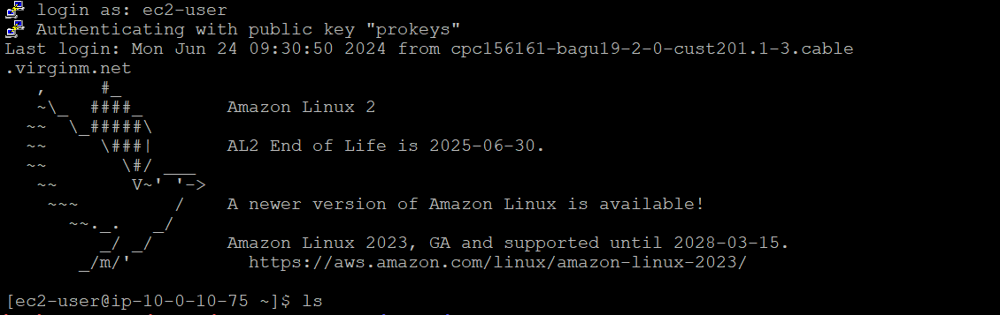
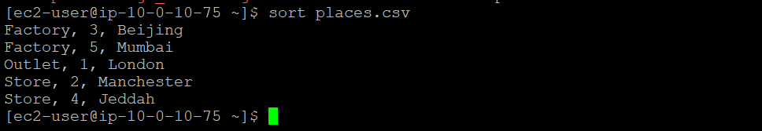
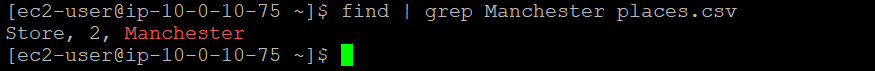
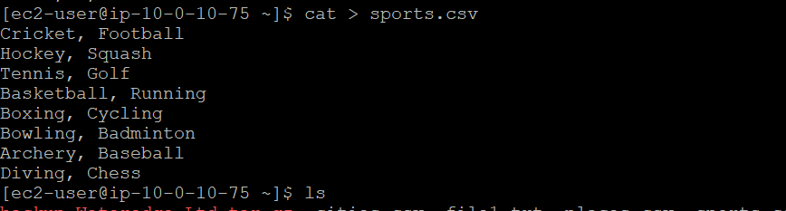
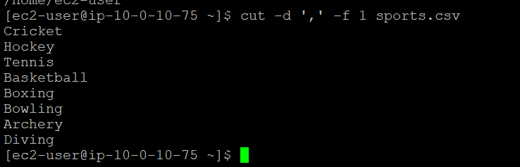
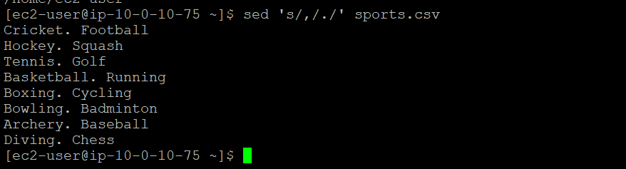

You can use tee command to direct output to a file. sort command to reorganize the contents of a .csv file. cut command to edit the contents of a file. sed command to replace (e.g. words etc) and pipe operator to combine two or more commands. I have already SSH to connect to an Amazon Linux EC2 instance.
You use the tee command to display the output to the screen and a file. The tee command reads the standard input. In this example, the standard input is hostname. The tee command outputs the hostname to the screen (in the shell) and the designated file, which is file1.txt.
To validate that you are in the /home/ec2-user folder, enter pwd and press Enter and
from your current location in the terminal, enter hostname | tee file1.txt and press Enter.
From the following output, you can see the standard input for tee in the output of the command hostname. The tee command wrote the hostname to the file1.txt and to the screen.
To confirm that the file1.txt file has been created, enter ls and press Enter
you use the sort command to reorder the list within the places.csv file. You also use the pipe operator to search for the factory in Paris. The cat command reads files sequentially, displaying their content to the terminal.
To validate that you are in the /home/ec2-user folder, enter pwd and press Enter.
Enter cat > places.csv and press Enter.
Copy and past below text.
Outlet, 1, London
Store, 2, Manchester
Factory, 3, Beijing
Store, 4, Jeddah
Factory, 5, Mumbai
Output should look like below
Press CTRL+D to exit the file. To verify that the test.csv file has been created, enter ls and press Enter. Now that you have created a few items within the places.csv file, use the sort command to reorder the list. Enter sort places.csv and press Enter. The output should look like the following image. Because you used the sort command with no options, it sorted the list with the default action by alphabetical order, which is why Factory is listed before Stores. The command then sorts by numerical order.
To look for the factory named Paris using the pipe (|) operator, enter find | grep Manchester places.csv and press Enter. In the following output, find | grep Manchester places.csv searches and lists the content of the test.csv file and redirects the results to the grep command where it searches for the Manchester pattern.
You use the cut command to edit the places.csv file. To validate that you are in the /home/ec2-user folder, enter pwd and press Enter. Enter cat > sports.csv and press Enter and past below command.
Cricket, Football
Hockey, Squash
Tennis, Golf
Basketball, Running
Boxing, Cycling
Bowling, Badminton
Archery, Baseball
Diving, Chess
Press CTRL+D to exit the file.
You can use the cut command to cut sections from lines of text by character. You can use the -d (delimiter) option, the , option, and the -f (field) option. The combined command and options extract the first field of each record. Enter the following command
cut -d ',' -f 1 sports.csv
As you can see from the following output, the cut command removed everything after comma (,).
Use only the sed command to make changes or do all the changes in one line. (You can use command chaining using the pipe character (|). the sed command is mainly used to replace some text in a file for different text). Use the sed command to replace the first comma (,) with periods (.) in both the places.csv and sports.csv files
sed 's/,/./' sports.csv
